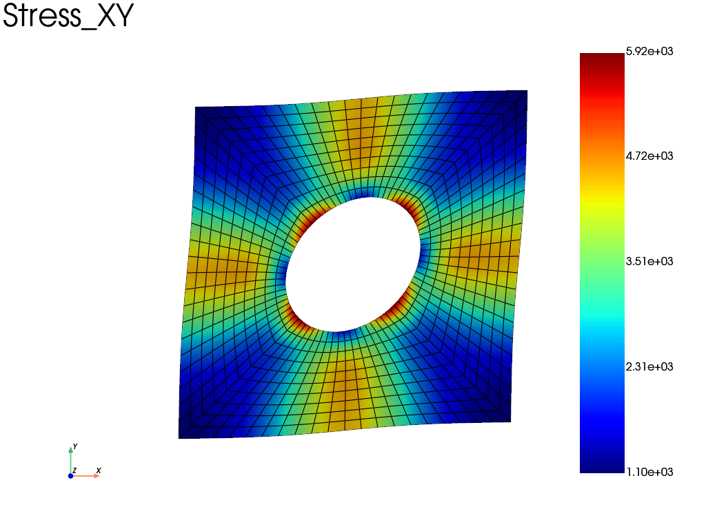

Note
Go to the end to download the full example code.
2D periodic boundary condition
Periodic boundary conditions are enforced on a 2D geometry with plane stress assumption (plate with hole). A mean strain tensor is enforced, and the resulting mean stress is estimated.
import fedoo as fd
import numpy as np
Dimension of the problem
fd.ModelingSpace("2Dstress")
<fedoo.core.modelingspace.ModelingSpace object at 0x7fa9c459d120>
Definition of the Geometry
mesh = fd.mesh.hole_plate_mesh()
# alternative mesh below (uncomment the line)
# mesh = fd.mesh.rectangle_mesh(nx=51, ny=51)
Now define the problem to solve
# ------------------------------------------------------------------------------
# Material definition
# ------------------------------------------------------------------------------
fd.constitutivelaw.ElasticIsotrop(1e5, 0.3, name="ElasticLaw")
# ------------------------------------------------------------------------------
# Mechanical weak formulation
# ------------------------------------------------------------------------------
wf = fd.weakform.StressEquilibrium("ElasticLaw")
# ------------------------------------------------------------------------------
# Global Matrix assembly
# ------------------------------------------------------------------------------
fd.Assembly.create(wf, mesh, name="Assembly")
# ------------------------------------------------------------------------------
# Static problem based on the just defined assembly
# ------------------------------------------------------------------------------
pb = fd.problem.Linear("Assembly")
Add periodic constraint
Add a periodic conditions (ie a multipoint constraint) Some global dof are automatically added to the problem:
‘E_xx’, ‘E_yy’, ‘E_xy’ that refere to the mean strain components
The global vector ‘MeanStrain’ is also added
pb.bc.add(fd.constraint.PeriodicBC(periodicity_type="small_strain"))
2D Periodic Boundary Condition:
name = 'Periodicity'
Add standard boundary conditions
# ------------------------------------------------------------------------------
# Macroscopic strain components to enforce
Exx = 0
Eyy = 0
Exy = 0.1
# Mean strain: Dirichlet (strain) or Neumann (associated mean stress) can be enforced
pb.bc.add("Dirichlet", "E_xx", Exx) # EpsXX
pb.bc.add("Dirichlet", "E_xy", Exy) # EpsXY
pb.bc.add("Dirichlet", "E_yy", Eyy) # EpsYY
# Block one node to avoid singularity
center = mesh.nearest_node(mesh.bounding_box.center)
pb.bc.add("Dirichlet", center, "Disp", 0)
List of boundary conditions:
number of bc = 2
0: Dirichlet -> 'DispX' for 1 nodes set to 0
1: Dirichlet -> 'DispY' for 1 nodes set to 0
Solve and plot stress field
pb.solve()
# ------------------------------------------------------------------------------
# Post-treatment
# ------------------------------------------------------------------------------
res = pb.get_results("Assembly", ["Disp", "Stress", "MeanStrain"])
# plot the deformed mesh with the shear stress (component=3).
res.plot("Stress", "XY", "Node")

print the macroscopic strain tensor and stress tensor
print(
"Strain tensor ([Exx, Eyy, Exy]): ",
[pb.get_dof_solution(component)[0] for component in ["E_xx", "E_yy", "E_xy"]],
)
# Compute the mean stress tensor
surf = mesh.bounding_box.volume # total surface of the domain = volume in 2d
mean_stress = [1 / surf * mesh.integrate_field(res["Stress"][i]) for i in [0, 1, 3]]
print("Stress tensor ([Sxx, Syy, Sxy]): ", mean_stress)
Strain tensor ([Exx, Eyy, Exy]): [np.float64(0.0), np.float64(0.0), np.float64(0.1)]
Stress tensor ([Sxx, Syy, Sxy]): [np.float64(-7.052631190163084e-12), np.float64(-1.352008780486358e-11), np.float64(2497.6680151185924)]
Total running time of the script: (0 minutes 0.199 seconds)